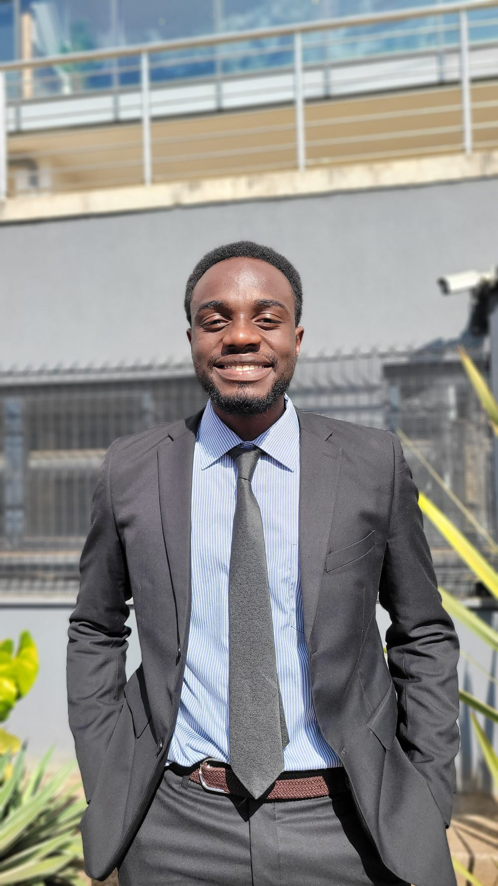

Software Engineer & System Designer
I build production-grade fintech infrastructure, spatial intelligence platforms, and social-impact systems. Currently architecting digital ecosystems for Tech for Nonprofits and high-performance navigation engines.
Available for full-time roles starting Dec 2026

Hi, I'm Michael, a software engineer and system designer based in Kenya, focused on building production-grade digital products with measurable impact. I work at the intersection of fintech infrastructure, systems architecture, and social-impact technology.
I architect and deploy full-stack ecosystems across web and mobile, from secure payment integrations to high-performance spatial platforms. My approach combines technical depth with practical execution.
Leading the vision and technical architecture of a blockchain-based agricultural equity tokenization platform. Engineered the Motoko backend and Rust token factory on the Internet Computer (ICP), enabling decentralized capital raising for Kenyan farmers. Live on mainnet.
Architecting an industry-ready spatial intelligence platform. Developed a high-performance positioning engine in Rust (WASM) and a vector-native mapping infrastructure using PostGIS and pgRouting.
Architecting scalable digital ecosystems for regional NGOs, focusing on API integrations and cross-platform mobile development in Kotlin.
A selection of systems I have architected and shipped, spanning blockchain fintech, indoor spatial intelligence, and social-impact platforms.
An agricultural equity tokenization platform that turns Kenyan farms into on-chain investable assets. Built the Motoko backend and Rust token factory on the Internet Computer, with escrow-oriented investment flows. Live on mainnet.
An indoor navigation platform powered by a Rust positioning engine. Engineered a vector-native mapping layer and a 2.5D isometric interface to handle complex indoor spatial data where GPS fails.
A platform connecting tech volunteers with nonprofits. I built the Django REST API, the Next.js dashboard, and a Play Store Android app, backed by Google Cloud Run, Cloud SQL, and Firebase.
A production campus marketplace with verified transactions, Daraja (M-Pesa) and GavaConnect payment integrations, and AI-assisted discovery, helping students do business safely and legally.
A low-code AI orchestration platform for building, deploying, and automating generative AI pipelines. Features a visual drag-and-drop builder, multi-agent workflows, and a RAG-powered knowledge base.
An accessibility-first suite built with the Ability-Allies team, including a core web app for digital inclusion and an educational extension, designed to make learning and web navigation work for students with diverse needs.